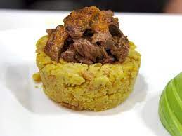

A Spanish twist, Skirt steak with Mofon

A hispanic staple, fried plantains and pork and juicy skirt steak cooked to perfection.
Ingredients:
- Vegetable Oil
- 2 plantains, sliced 3/4-inch thick
- 2 to 3 teaspoons beef broth
- 2 teaspoons garlic oil, plus more for drizzling
- Chicharrones, optional
- 1 pound skirt steak
- Salt and Pepper
- Creole sauce, for drizzling
- sliced avocados for serving
Instructions: